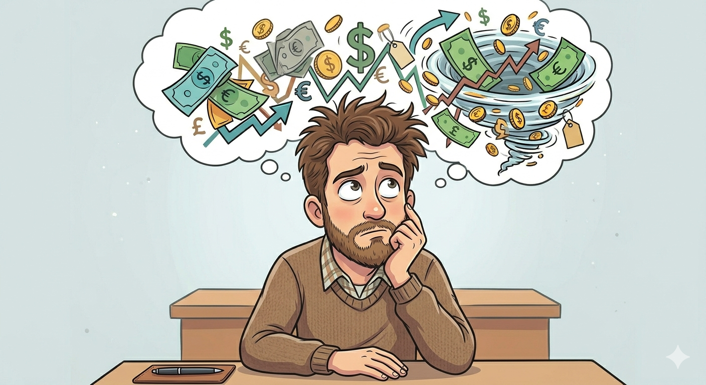

Faire les courses, prendre le transport, te payer des services en fonction de tes besoins fait certainement partie de ta vie quotidienne. En outre, tout cela a un coût que tu déduis de tes revenus. Alors, pas besoin d'être un fin observateur pour constater que ce coût est instable. Il ne se contente pas de changer, mais change souvent pour augmenter. Faute de quoi, un même revenu n'est plus suffisant pour acheter un même produit ou service. C'est à ce moment que tu commences à entendre parler d'inflation. Si l'inflation est un terme que l'on entend souvent aux informations, dans les débats politiques ou dans les conversations du quotidien, ce concept, pour beaucoup, reste encore flou.
Nous savons (ou pas) que l'inflation est une hausse générale des prix, mais nous pouvons encore nous demander : d'où vient-elle ? Comment affecte-t-elle directement nos vies ? Ou encore pouvons-nous l'influencer ? Nous allons, dans cet article, essayer de comprendre l'inflation de manière claire, ses racines et jusqu'où elle peut nous impacter.

Qu'entend-on par inflation ?
L'inflation, c'est la hausse générale des prix sur le marché. Pour parler d'inflation, certains facteurs doivent être vérifiés.
Premièrement, les prix de plusieurs produits doivent augmenter. Supposons qu'il y ait eu un cyclone qui ait principalement touché les plantations de bananes. La rareté de ce produit ferait augmenter son prix. Mais puisqu'il n'y a que le prix de la banane qui a augmenté, on ne peut pas parler d'inflation. D'où le mot générale.
Deuxièmement, la hausse des prix doit être durable. Prenons l'exemple d'un événement qui se produit assez souvent en Haïti : une rumeur circule faisant croire qu'il va y avoir une pénurie de carburant dans tout le pays. En conséquence, les commerçants augmentent les prix des produits et du carburant. Une fois la rumeur dissipée, les prix redeviennent tels qu'ils étaient avant. Dans ce cas, on ne peut pas parler d'inflation. La hausse des prix doit donc être durable.
Maintenant que nous savons ce qu'est l'inflation, à savoir une hausse générale et durable des prix sur le marché, nous pouvons nous intéresser à ses origines.
D'où vient réellement l'inflation ?
Différentes situations, facteurs et éléments peuvent donner naissance à une hausse générale des prix. Mais tous sont liés à un déséquilibre entre l'offre et la demande.
Par exemple, il peut y avoir inflation lorsqu'il y a trop d'argent disponible pour trop peu de produits. Cette situation peut survenir s'il y a une création excessive de monnaie. Dans ce cas, il y a beaucoup plus d'argent disponible pour une même quantité de produits et de services.
Il peut également y avoir inflation lorsque le prix d'un produit de base, c'est-à-dire un produit essentiel, augmente. Par exemple, en Haïti, l'augmentation du prix de l'essence influence le prix de nombreux autres produits. Quand le prix de l'essence augmente, celui du transport augmente aussi. Les commerçants paient plus pour transporter leurs marchandises, donc ils augmentent les prix. Et ainsi de suite.
Les crises et les pénuries peuvent aussi causer de l'inflation : pandémie, guerre, instabilité politique. Par exemple, la crise sécuritaire en Haïti et tout ce qui l'accompagne (routes bloquées) empêchent la libre circulation des produits et conduisent à des pénuries, ce qui entraîne une inflation souvent rapide et difficile à contrôler.
Si l'inflation découle de plusieurs facteurs indépendants de notre volonté, elle a aussi plusieurs impacts directs sur notre vie.
Comment l'inflation affecte directement votre vie ?
Un impact direct et évident de l'inflation est la baisse du pouvoir d'achat. Cela signifie que l'argent perd de sa valeur. Si le salaire ne suit pas l'inflation, nous fournissons la même quantité d'effort pour un revenu qui ne permet plus de répondre aux mêmes besoins.
Nos économies peuvent aussi être fortement touchées. Supposons que tu économises pour t'acheter un appareil qui coûte 10 gourdes. Tu fais des efforts, tu mets de côté, et après un certain temps, tu arrives enfin à réunir cette somme. Mais au moment où tu es prêt à acheter, tu découvres que le prix du même appareil est passé à 12, puis à 15 gourdes.
Dans ce cas, ton épargne, qui semblait suffisante, ne l'est plus. Cela peut causer une grande frustration et te laisser incertain face à l'avenir.
Maintenant que nous savons que l'inflation a un impact direct, tant matériel que psychologique, sur nos vies, nous pouvons nous demander si nous avons nous-mêmes un impact sur elle.
Avons-nous un impact sur l'inflation ?
À première vue, on pourrait penser que nous sommes totalement impuissants face à l'inflation. Pourtant, nos comportements quotidiens peuvent, à petite échelle, influencer les prix.
En effet, lorsque la demande pour un produit augmente fortement alors que l'offre reste limitée, les prix ont tendance à augmenter. Par exemple, si tout le monde se met à acheter un même produit en même temps par peur de pénurie, les commerçants peuvent augmenter les prix. Dans ce cas, notre comportement collectif contribue indirectement à la hausse des prix.
De plus, les attentes des consommateurs jouent aussi un rôle important. Si les gens s'attendent à une augmentation des prix, ils peuvent acheter davantage immédiatement, ce qui augmente encore la demande et donc l'inflation. On parle alors d'un phénomène d'anticipation.
Cependant, il faut préciser que les individus seuls n'ont pas un contrôle direct sur l'inflation. Ce sont surtout les politiques économiques des États, les banques centrales, la production nationale et les crises globales qui ont le plus grand impact. Nous pouvons donc influencer indirectement l'inflation, mais pas la contrôler seuls.
Pourquoi certains pays acceptent-ils un peu d'inflation ?
Contrairement à ce que l'on pourrait penser, une inflation faible et contrôlée n'est pas toujours une mauvaise chose. En réalité, de nombreux pays considèrent un certain niveau d'inflation comme normal, voire nécessaire.
D'abord, une légère inflation encourage la consommation. Si les prix augmentent progressivement, les consommateurs ont tendance à acheter maintenant plutôt que d'attendre, ce qui stimule l'économie. Cela permet aux entreprises de vendre davantage et de continuer à produire.
Ensuite, une inflation modérée permet aussi d'éviter la stagnation économique. Si les prix restent trop stables ou baissent (on parle alors de déflation), les entreprises peuvent perdre des revenus, réduire la production et même licencier des employés.
Enfin, une petite inflation permet d'ajuster plus facilement les salaires et les dettes. Par exemple, un remboursement de prêt devient plus facile avec le temps si les revenus augmentent légèrement avec les prix.
C'est pour cela que certains pays fixent un objectif d'inflation autour de 2 % par an, considéré comme un équilibre entre croissance et stabilité.
En définitive, l'inflation est un phénomène économique complexe mais présent dans notre quotidien. Elle se traduit par une hausse générale et durable des prix, qui réduit progressivement le pouvoir d'achat des ménages et modifie la valeur de l'argent au fil du temps. Ses origines sont multiples, allant du déséquilibre entre l'offre et la demande aux crises économiques, en passant par l'augmentation du coût des produits essentiels.
Même si nous n'en sommes pas les principaux responsables, nos comportements de consommation peuvent parfois influencer certaines variations de prix. Toutefois, l'inflation reste surtout encadrée par des décisions économiques prises à grande échelle par les États et les institutions financières.
Enfin, bien qu'elle puisse sembler uniquement négative, une inflation modérée est parfois recherchée, car elle peut stimuler la consommation et soutenir la croissance économique. Ainsi, comprendre l'inflation permet non seulement de mieux analyser l'économie, mais aussi de mieux gérer nos choix financiers et nos projets personnels face à un monde en constante évolution.
Suis notre chaîne WhatsApp pour discuter avec nous et être au courant de chaque nouvel article ⬇️
Rejoindre la chaîne